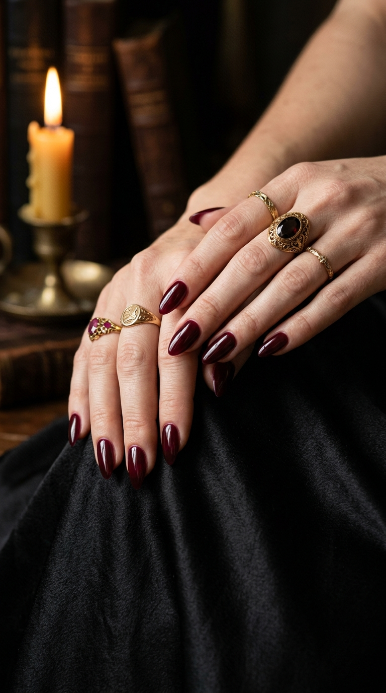
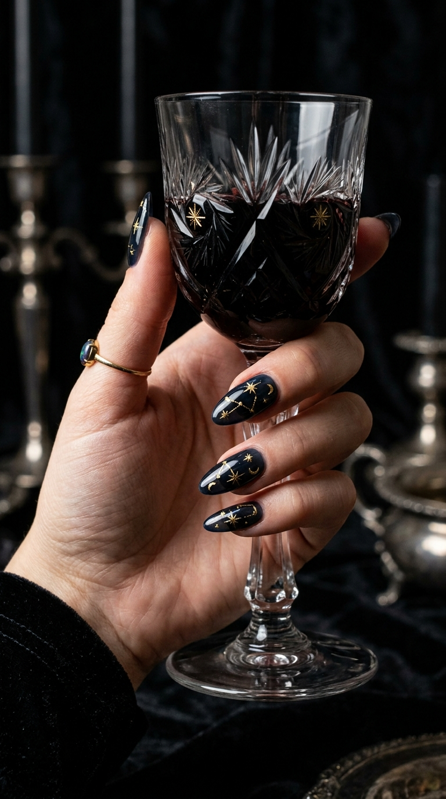
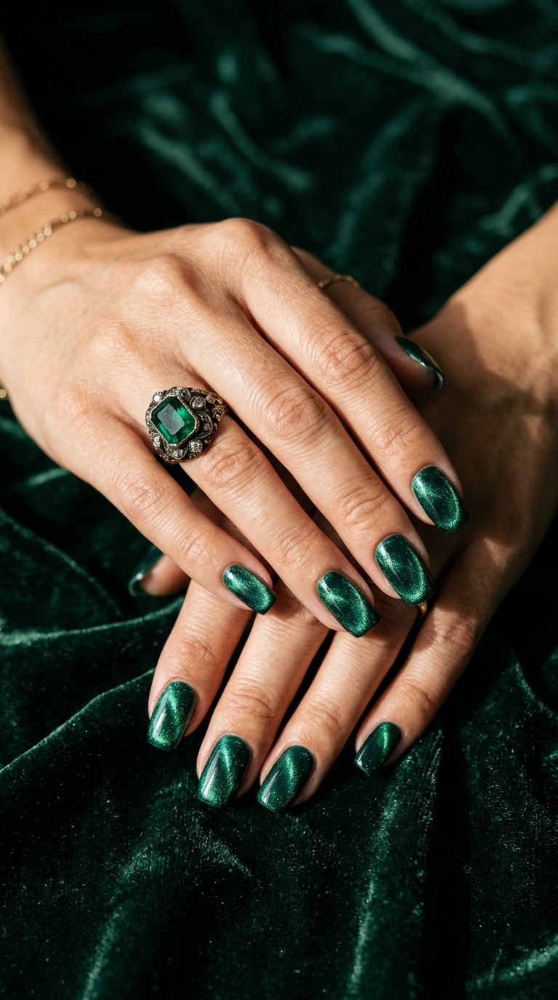

Vampy Cabernet, Celestial Gold & Emerald Velvet: The Gothic Evening Edit
Departing from kitschy Halloween motifs in favor of Victorian depth and red-carpet mystery. A deep study into translucent black-cherry gels, astronomical micro-gold foil, and crushed emerald magnetic textures.

The Vampy Cabernet Jelly: Liquid Black-Cherry Luxury
The quintessential shade of cold-weather sophistication. Rather than a flat, solid dark red that appears nearly black in dim lighting, this look relies on a semi-translucent cabernet jelly lacquer. Layered across an almond silhouette, it preserves a glowing ruby core that radiates under candlelit dinners and evening gala events.
Tapered Almond or Stiletto
Elongates hands and accentuates dramatic vampy silhouettes.
Plumping Glass Non-Wipe Gel
Gives the jelly formula a syrup-like, liquid wet-look sheen.
"Medium almond shape. Apply two generous coats of translucent cabernet wine jelly gel (avoid opaque creams). Layer with a plumping non-wipe wet-glass topcoat so the ruby undertone shows through in bright light."
Celestial Gold & Midnight Noir: The Astrological Lookbook
Replacing cartoonish spooky motifs with timeless astronomical elegance. An ink-black sheer jelly foundation serves as the night sky canvas for hand-painted micro gold foil starbursts, delicate 4-point constellations, and crescent moon arcs. It feels mysterious, regal, and deeply artistic.

Tapered Oval or Almond
Offers the right surface area for delicate constellation placement.
Fine Detail Brush + Transfer Foil
Keeps starburst lines razor-thin and prevents flaking.
"Almond shape. Apply one coat of semi-sheer midnight noir gel. Hand-paint micro 18k gold foil celestial starbursts and fine crescent moons on selected accent nails. Seal under a chip-resistant glossy topcoat."
Emerald Moss Velvet Cat-Eye: Victorian Crushed Shimmer
Inspired by antique Victorian tapestries and heavy moss-green velvet upholstery. Instead of pulling magnetic particles into a single diagonal line, this technique disperses the 9D mica softly across the whole nail plate. The outcome is a multidimensional, tactile fabric appearance that glows as hands move.

Natural Squoval or Almond
Keeps starburst lines razor-thin and prevents flaking.
"Almond shape. Apply one coat of semi-sheer midnight noir gel. Hand-paint micro 18k gold foil celestial starbursts and fine crescent moons on selected accent nails. Seal under a chip-resistant glossy topcoat."
Emerald Moss Velvet Cat-Eye: Victorian Crushed Shimmer
Inspired by antique Victorian tapestries and heavy moss-green velvet upholstery. Instead of pulling magnetic particles into a single diagonal line, this technique disperses the 9D mica softly across the whole nail plate. The outcome is a multidimensional, tactile fabric appearance that glows as hands move.
Natural Squoval or Almond
Ensures the soft velvet dispersion covers the nail evenly.
Surround-Wand Velvet Pull
Magnets placed at all four edges produce liquid velvet rather than lines.
"Natural squoval nails. One thin base coat of black jelly polish. Apply deep emerald green 9D velvet magnetic polish, and use cylindrical magnets from all outer edges to push shimmer into a seamless velvet glow before curing."